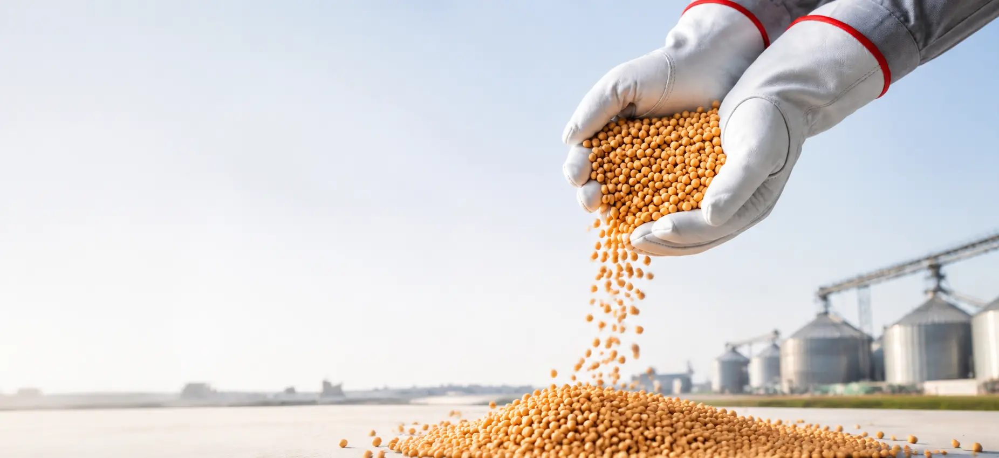
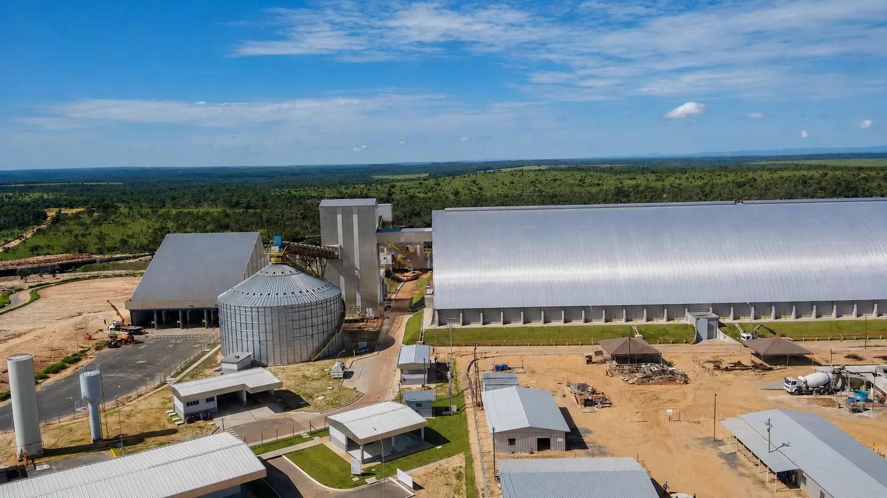
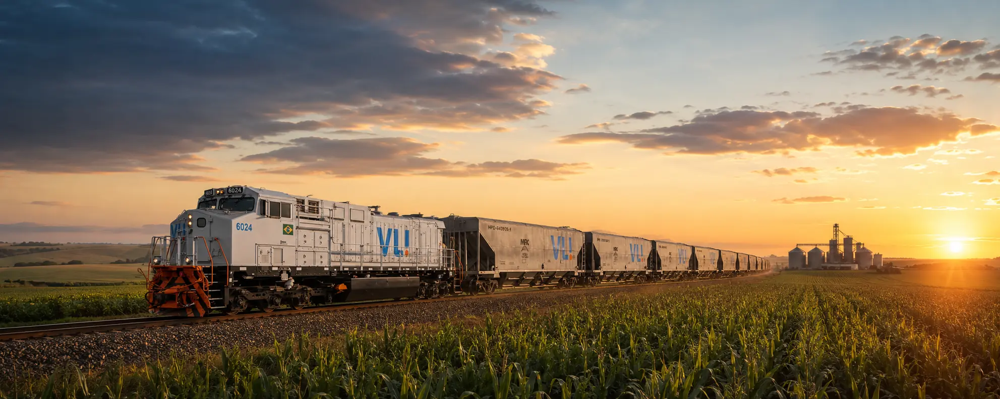
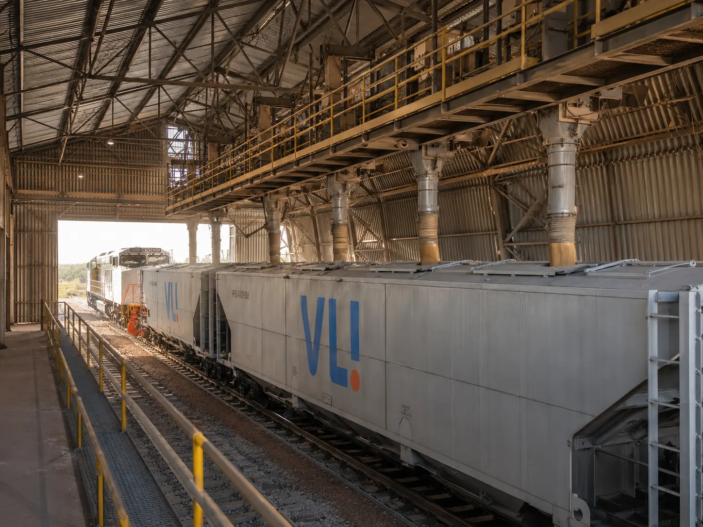

Agora, sem o caminho burocrático.
Solução VLI que simplifica o recebimento de cargas CIF e conecta o agronegócio à ferrovia de forma segura, rastreável e integrada.
Quero conhecer o CargoCIF
para o agro.
Mais futuro
para o Brasil.
O problema nunca foi levar o grão até a ferrovia.Era fazer a operação chegar até ela.
de cargas movimentadas pelo CargoCIF entre janeiro e junho de 2026.
clientes ativos
ambiente digital controlado
expansão prevista para todos os Terminais Integradores de grãos da VLI.
Uma operação mais simples começa antes do trem.
A carga é negociada na modalidade CIF.
O CargoCIF organiza a troca documental.
A operação acontece em ambiente digital controlado.
A carga pode ser recebida diretamente no terminal VLI.
A ferrovia entra no percurso.

que conecta
oportunidades
Digital onde precisa ser digital.
Logística onde precisa acontecer.
Controle sobre as etapas da operação.
Processo estruturado para atender às exigências da operação CIF.
Mais segurança para produtores, clientes e operadores logísticos.

Uma dor do mercado virou uma solução VLI.
O CargoCIF nasceu no Empreendedores Inova VLI, programa de intraempreendedorismo da companhia. A proposta surgiu do desafio de criar uma alternativa automatizada, rastreável e fiscalmente adequada para receber operações CIF em escala.
que gera
valor real
Seu grão já chega até aqui.
Agora ele pode seguir pela ferrovia.
Conheça as possibilidades do CargoCIF para sua operação.
Falar com um especialista VLI
O essencial sobre o CargoCIF.
O que é o CargoCIF?
Solução digital da VLI para simplificar operações CIF e ampliar o acesso do agronegócio à ferrovia.
Quais cargas são atendidas?
A solução foi apresentada pela VLI para operações de soja e milho.
Como funciona a troca documental?
O processo acontece em ambiente digital controlado, com rastreabilidade e conformidade fiscal.